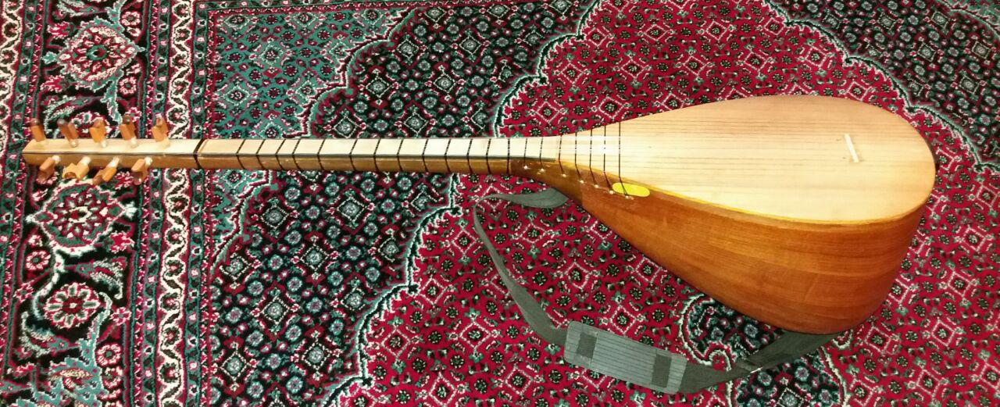

چگور (قوپوز)
چُگور یا چوگور سازی از خانوادهٔ سازهای زهی مقید از ردهٔ قوپوز است. چگور مرکب از یک قطعه چوب مجوف بر شکل عودی کوچک است که دارای پنج وتر میباشد.
تاریخچه چگور
عاشقهای ساوه، قزوین، همدان و ایل قشقایی در حال حاضر به سازشان چُئگور میگویند. چئگورهای نواحی یاد شده امروزه چیزی به جز ساز عاشیقی متداول در آذربایجان نیست. البته اکنون چُئگور در ایل قشقایی منسوخ شده است. ظاهراً آخرین فردی که در ایل قشقایی این ساز را مینواخته، حسینقلی خان معروف به صَمصام السلطان (د ۱۳۱۹ش) بوده که در ۷۵ سالگی درگذشته است. او ایلخانِ ایلِ قشقایی بود و اولین و آخرین ایلخانی بود که به نواختن چئگور پرداخته است.
اندکی پیش از او ظاهراً افراد دیگری در ایل قشقایی چئگور مینواختهاند که از جملۀ آنها میتوان از جعفرقلی بیک از طایفۀ چگینی، و اسفندیار بیک نام برد. در موسیقی عاشقی ایل قشقایی دو آهنگ منسوب به صمصامالسلطان است که شعر و موسیقی آنها را خود او ساخته است، یکی آهنگ «صمصام» و دیگری آهنگ «نه حاجت باده ایچمآما» (حاجتی نیست به خوردن باده) (همو، تحقیقات). تصویری از میانسالی صمصامالسلطان در دست است که بهرغم کیفیت نامناسب آن، او را چئگور در دست نشان میدهد. با از میان رفتن چگورِ قشقایی، عاشقها به کمانچه و تار روی آوردند و برخی نیز کمانچه را رها کردند و به نواختن ویلن مشغول شدند.
عاشقهای همدان نیز امروزه در حال از میان رفتناند؛ اما هنوز حضور دارند. در قزوین و ساوه نیز عاشقها هنوز چئگور مینوازند و میخوانند. «عاشق» در استان همدان عموماً به شخصی اطلاق میشود که نوازندۀ چئگور است و حین نواختن ساز به خواندن و نقل داستان میپردازد.
البته گاهی اوقات در مراسم عروسی ــ که مهمترین عرصه برای هنرنمایـی عاشقهاست ــ نوازنـدگان بالابـان و دایـره بـا عـاشق همراهی میکنند و به صورت گروه ۳ نفره به اجرای موسیقی میپردازند؛ اما در حین نقل داستان هیچ سازی غیر از چئگور نواخته نمیشود، زیرا در غیر این صورت مردم متوجه مفهوم داستان نمیشوند. بنابراین نقش عاشق و ساز چئگور در مجلس عروسی عمدتاً نقل و همراهی آواز است و از این ساز، برای همراهی در رقص استفاده نمیشود، اما بعضی مواقع، در غیاب سازهای دیگر، عاشق مجبور به اجرای قطعاتی برای همراهی رقص نیز میشود.

ساختار چگور
ساز زهی چگور یا همان قوپوز نیز مانند دوتار و تنبور کاسهای گلابی شکل و دستهای متصل به آن دارد. سیمها در امتداد دسته و کاسه ساز کشیده شدهاست و با انگشتگذاری و زخمهزدن نغمات استخراج میشوند.
بر روی سه رشته سیم پایین که با هم همصدا کوک شدهاند انگشتگذاری میشود و ملودی ایجاد شده توسط سیمهای دیگر (واخوان) همراهی میشود، در واقع به غیر از سه رشته سیم اول بر روی سیمهای دیگر انگشتگذاری نمیشود. گاهی درون دسته را خالی میکنند و در آن ساچمه و پولکهای ریز میریزند تا هنگام تکان خوردن ساز به صدا درآیند، به این نوع قوپوزها «دهراز»، به معنای گذرگاههای تنگ و باریک، گفته میشود، علاوه بر این سازهایی که دسته آنها خالی شده است سبکتر هستند و برای حملکردن و گردش در مجلس و قهوهخانهها مناسبترند.
از آنجا که در فرهنگ موسیقی عاشیقی، عاشیق برای گرم کردن مجلس دائم در تکاپو و قدمزدن است، ساز نیز با تسمهای به پهلوی نوازنده متصل شده و همراه او در مجلس میشود. قوپوز آنچنان اهمیتی در فرهنگ عاشیقی آذربایجان یافته است که به این ساز جنبه تقدس بخشیدهاند و به همین ترتیب عاشیق را نیز امین ایل و حتی یار و برادر پیامبر میدانند.
در قدیم اعتقاد بر این بود که جمجمه سر از ۹ استخوان تشکیل شده است، بنا بر همین اعتقاد عدد نمادین ۹ جایگاه ویژهای در ساختن قوپوزها داشت( ۹ ترکه، ۹ سیم و ۹ دستان) اما امروزه این معادلات بر هم ریخته و تعداد دستانهای این ساز تا ۱۳ و حتی ۱۶ عدد نیز افزایش یافته است و کاسه لزوما ۹ ترک ساخته نمیشود (۱۱ ترکه و ۱۳ ترکه)، تعداد سیمها نیز به ۷ یا ۸ تقلیل یافته است. همچنین در گذشته رسم بر این بود که صفحه قوپوز را از سه تکه چوب بهم چسبیده میساختند ولی امروزه صفحه این ساز یک تکه است.
قوپوز را در سه اندازه مختلف میسازند: «آنا ساز» که مختص عاشیقهای حرفهای و استاد است، «جوره ساز» برای نوجوانان و جوانان، و «تاوار ساز» برای خانمها. مضراب قوپوز از چوب درخت گیلاس تهیه میشد که امروزه پلاستیک جایگزین آن شده است. آنچه بیش از همه در این ساز جلب نظر میکند طرحها و نقشهایی است که سازندگان قوپوز با مهارت خاصی بر روی آن حک میکنند. حکاکی و صدفکاری از طرح گل و گیاه، حیوانات و تصاویر مینیاتوری و خطاطی اشعار بر روی بدنه ساز بسیار مرسوم است.